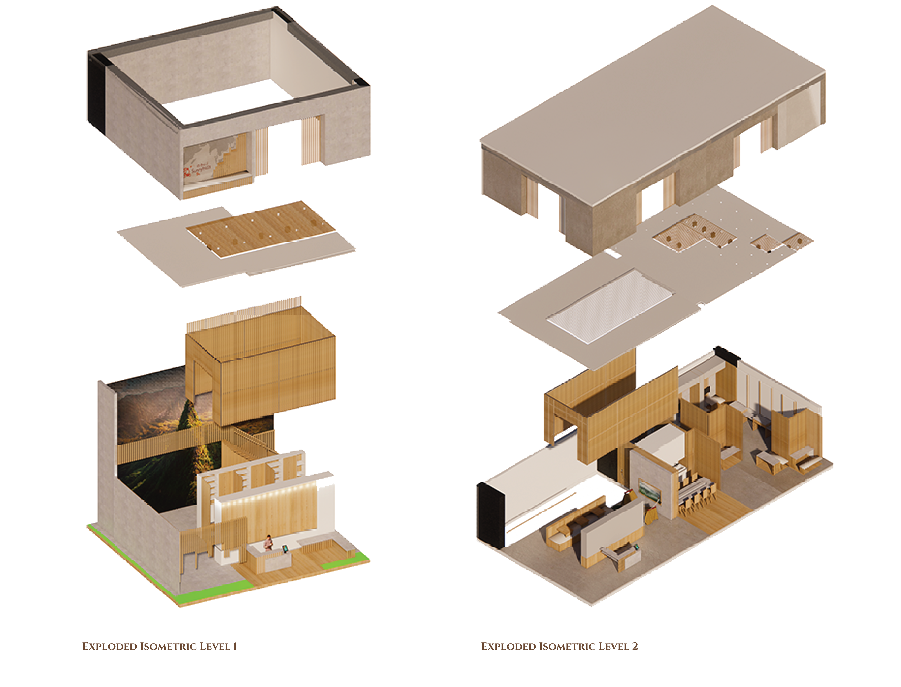
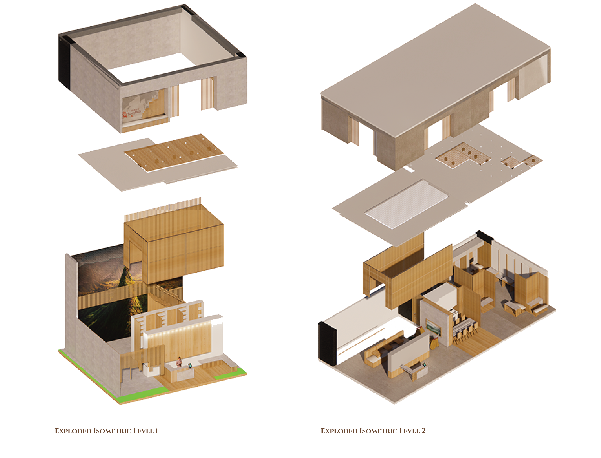

CORE
connection. oath. resolute. education
BRIEF
This is the second project in my Diploma in Interior Design (Year 2), where the objective was to design a two-level mash-up space integrating both office and retail functions for the same assigned brand as the POP-UP! store. The project aimed to envision a new kind of retail and workplace experience by seamlessly merging commercial and professional environments into one cohesive spatial concept.
Through brand research, site analysis, case studies, and an understanding of consumer behavior, I developed a concept that reflects the brand identity while responding to spatial context. The final design emphasizes creativity and flexibility, seamlessly merging office and retail functions with thoughtful material choices and a carefully curated spatial ambiance.
LOCATION


Located in People’s Park Complex, right outside Chinatown MRT station. The MASH-UP! Project (Red) is located behind the POP-UP! Store (Green).
Design Intent
The design drive connection between Sunnyhills and stakeholder, be it staff or customers, with the repetition of directional element bringing stakeholders into a rhythmic flow to tie a bond.
Branded panels guide customers through curated activity touchpoints, each reflecting Sunnyhills’ identity and allowing visitors to gain a deeper understanding of the brand. As customers engage with these experiences, they begin to form personal connections with Sunnyhills.
To encourage interaction among staff, a flexible hot-desking system is introduced, with varied work settings designed to support different needs and tasks. This allows staff to choose how and where they work, fostering comfort and a sense of joy associated with the brand.
By bringing customers and staff together through food, Sunnyhills becomes more than a retail space—it becomes a place of connection, comfort, and shared happiness.

Persona & User Journey Map
Zoning

Rendered Drawings


 

3D Transformable Element
3D Renders